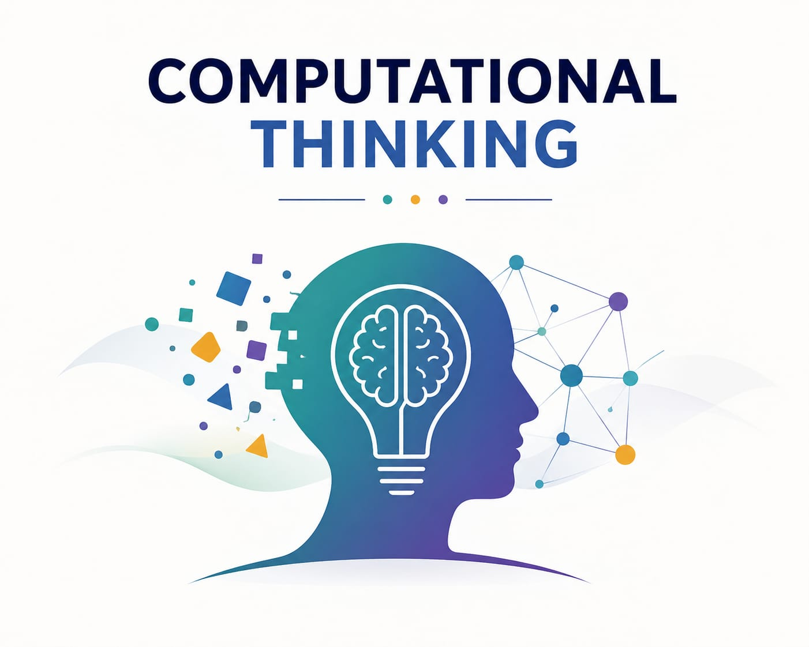

Breaking Problems into Solutions

Decomposition means breaking a large and complex problem into smaller parts that are easier to understand and solve.
For example, creating a smart city system can be divided into transportation, energy, safety, healthcare, and communication modules.
Pattern recognition involves identifying similarities, trends, and repeated behaviors within data or situations.
Recognizing patterns allows us to predict outcomes and develop more efficient solutions.
Abstraction focuses only on the important details while removing unnecessary information.
This helps simplify problems and makes designing solutions much easier.
Algorithms are step-by-step instructions that guide a system toward solving a problem efficiently.
From navigation apps to artificial intelligence, algorithms are at the heart of modern technology.
Clearly define the challenge and understand its requirements.
Break the problem into manageable components and study relationships.
Create a logical solution using algorithms and computational strategies.
Test, improve, and optimize the solution for better performance.
Training machines to learn, predict, and make decisions.
Improving diagnostics, treatment planning, and patient care.
Protecting digital systems using logical analysis and intelligent detection.
Planning missions and processing complex scientific data.
Computational Thinking is not only about computers. It is a mindset that helps individuals solve challenges, innovate effectively, and make informed decisions in every field of life.